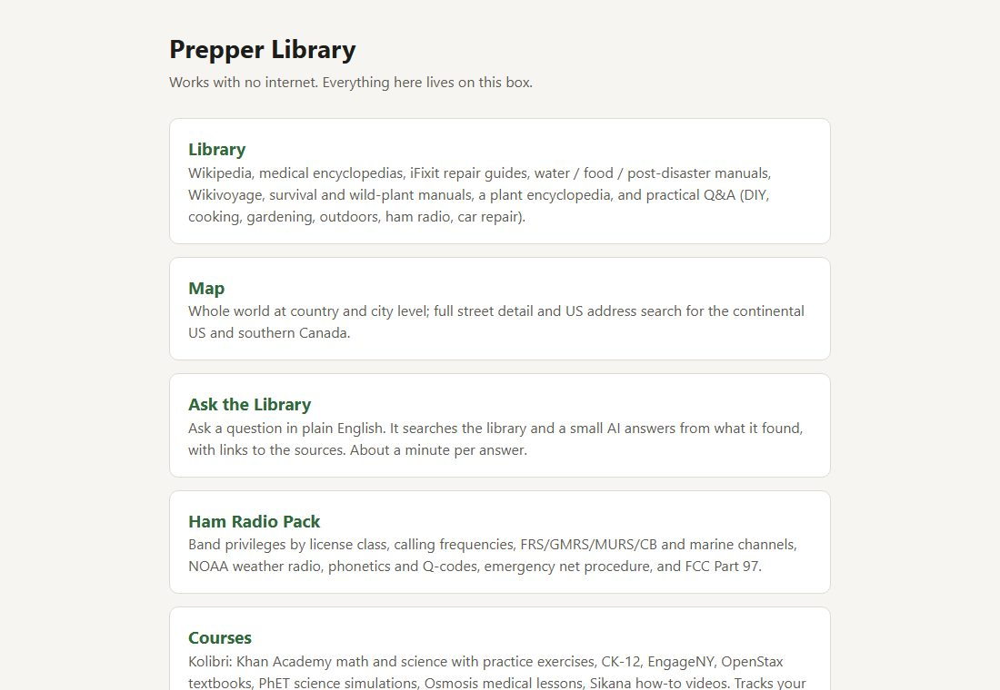
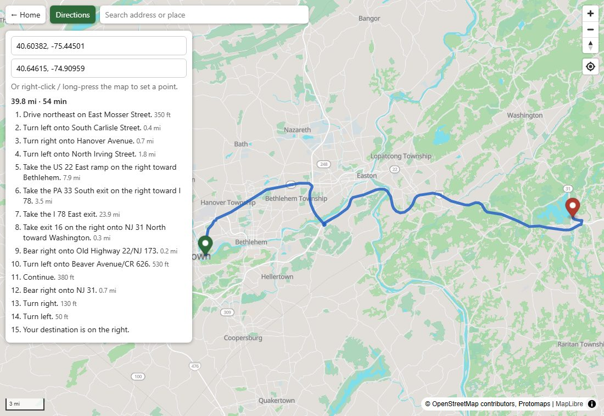
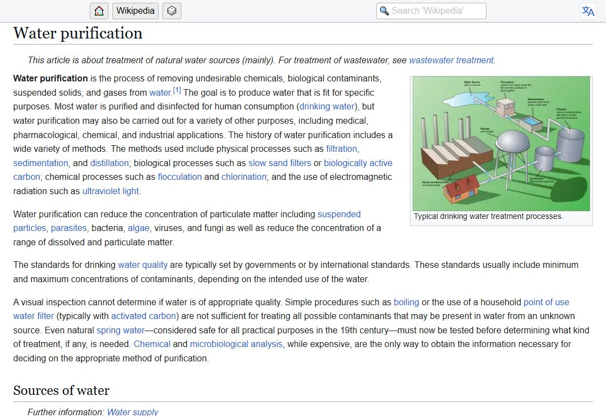

Turn a small old PC into a box that holds Wikipedia, first-aid and repair books, street maps with driving directions, school courses and a small AI. Everyone in the house reaches it from a phone or laptop. When the internet is down, it isn't.
📖 LibraryAll of English Wikipedia with pictures, a medical encyclopedia, iFixit repair guides, Wikivoyage, water, food and post-disaster manuals, Project Gutenberg, Crash Course and TED-Ed videos, and years of Q&A on DIY, cooking, gardening, car repair and the outdoors.
🗺️ MapThe whole world at city level and every US street, with address search and turn-by-turn driving directions, all served from the box.
🎓 CoursesKhan Academy math and science with practice exercises, CK-12, OpenStax textbooks, PhET science simulations and Osmosis medical lessons, with progress tracking.
💬 AskType a question in plain English. It searches the library and a small AI answers from what it found, with links to check.
📻 Ham radio packBand privileges, calling frequencies, FRS/GMRS/CB and marine channels, NOAA weather stations near you, net procedure and FCC Part 97.
📶 Its own Wi-FiOptional: the box puts up a Wi-Fi network, so phones can use it with no router at all. Plus a notice board for leaving messages and sharing files.

The start page. Open http://prepper.local on any phone or computer in the house.

Driving directions, worked out on the box itself.

Wikipedia, read from the box with Kiwix. (Article: Wikipedia, CC BY-SA 4.0.)
What you need
Enough
What we use
Computer
Any 64-bit PC with 8 GB of memory. An old office mini-PC or laptop is plenty. No graphics card.
Intel NUC from 2013 (Core i5, 8 GB)
Storage
250 GB holds the essentials, a smaller Wikipedia and a regional map
1 TB SSD inside, plus a 5 TB USB drive for a nightly backup and extra books
To install
A USB stick (4 GB or more), a keyboard and screen for the first half hour, and a wired internet connection while it downloads
Wi-Fi of its own
Optional: a USB Wi-Fi adapter that can be an access point (ours is a TP-Link Archer with a Realtek RTL8822BU chip, which Ubuntu supports out of the box)
Power
A mini-PC like ours draws roughly 10 to 25 watts, so a small battery power station runs it for hours.
Set it up
Plan an evening for the setup, then let it download for a day or two. You'll type a few commands; each one is below, ready to copy.
Make an install stick. Download Ubuntu Server (24.04 LTS or newer) and write it to the USB stick with balenaEtcher or Rufus.
Install Ubuntu. Plug a keyboard, screen and network cable into the PC. Start it and press the boot-menu key (usually F10, F12 or Esc) to boot from the stick. Take the defaults, except: name the server prepper, and tick Install OpenSSH server. When it finishes, remove the stick and reboot.
⚠️ Installing erases everything on the PC's disk.
Run the setup. From now on you can unplug the keyboard and screen and work from your own computer. Open a terminal (on Windows, PowerShell) and log in with the username you picked:
ssh yourname@prepper.local
Then:
git clone https://github.com/builtatthedesk/prepper-box.git
cd prepper-box
sudo ./setup.sh
About 15 minutes. At the end it prints the address of the start page. Open it: everything is there, just empty.
Fill it. Start the library download. It fetches the essentials first, then the biggest Wikipedia that fits your disk, then extras if there's room, checking every file:
tmux new -s fill
DATA=/srv/prepper /opt/prepper/get-content.sh
Close the window whenever you like; it keeps going. Books appear in the library as they finish. Then the map (19 GB for the US):
DATA=/srv/prepper /opt/prepper/get-maps.sh
Address search, courses, the manuals shelf, the ham pack and driving directions each have one more command; they're listed in the README.
Optional extras. Plug in a USB Wi-Fi adapter and run sudo /opt/prepper/hotspot/install.sh for the box's own Wi-Fi network. Add a USB hard drive for a nightly backup (README, "Optional").
No keyboard or screen?
Use a KVM-over-IP gadget (PiKVM, TinyPilot, JetKVM and similar). It plugs into the PC's HDMI and USB and shows the screen in your web browser. It can also pretend to be a USB stick: load the Ubuntu ISO into it as "virtual media", boot from it, and follow step 2 in the browser instead of at a desk. That's how ours was built.
The repo also has a hands-off installer (extras/unattended-iso) that installs Ubuntu with no questions at all. It erases the biggest disk in whatever boots it without asking, so use it only on a box you mean to wipe. Some KVMs only pass through the first 2.2 GB of an ISO, which breaks it; if the screen stops at grub>, go back to the normal install.
Or have Claude build it
Rather have your own version built from nothing, your way? Claude Code is an AI helper that writes and runs code for you. Install Ubuntu (steps 1 and 2 above), then run Claude Code on your own computer, paste this prompt, and change anything you like: your area for the map, your languages, what goes in the library. It explains each step as it goes and asks before changing the box.
Show the prompt
Build me an offline knowledge server ("prepper box") on a small PC that is already running a fresh Ubuntu Server install. I can reach it with: ssh <me>@prepper.local (it has internet during setup). Explain each step in plain English, keep everything simple, and ask me before you install anything on the box.
What it is: a start page plus a few services, all in Docker Compose, that keep working with no internet once the content is downloaded. People use it from phones and laptops on the home network.
The box: 64-bit Intel, 8 GB RAM, no GPU, one disk. Put the stack in /opt/prepper and all downloaded content in /srv/prepper (one DATA= setting so it can move to another disk). Check the free space before every big download and size things to fit.
Services (one docker-compose.yml, restart unless-stopped):
1. Start page on port 80 (nginx): one card per service, with plain-English descriptions. Links must use the hostname the page was opened with, so they work from any address.
2. Library: kiwix-serve on :8080 serving every .zim file in /srv/prepper/zim. A cron job restarts it when a new ZIM finishes downloading.
3. Library download script: from download.kiwix.org, newest version of each book, resumable, with aria2c (the mirrors are slow single-stream) into a hidden folder, then check the published sha256 before moving the file into the library. Order: essentials first (WikiMed medical encyclopedia, iFixit, Wikivoyage, the zimgit water/food/medicine/post-disaster/knots books, Stack Exchange DIY/cooking/gardening/outdoors/mechanics), then the biggest English Wikipedia that fits (maxi, else nopic, else mini) leaving 20 GB free, then extras if there's room (Wiktionary, Gutenberg, Khan Academy, Crash Course, TED-Ed).
4. Map at /maps/: MapLibre GL with Protomaps vector tiles in .pmtiles files served by nginx (range requests). world.pmtiles = the whole planet to zoom 7 (pmtiles extract of the latest daily build); a second file with full detail for my area on top. Bundle the map JavaScript, fonts and icons on the box (no CDN at run time).
5. Address search on the map: Photon geocoder with the prebuilt GraphHopper database for my country, proxied by nginx at /geocode/. Hide the search box if it's down.
6. Driving directions: Valhalla, tiles built on a bigger computer (merge the Geofabrik extracts with osmium first, or border roads get duplicated) and only served on the box, proxied at /route/route. Pin the image by digest so the tiles and the server version match. A Directions button on the map: from/to by search or long-press, route line and turn list in miles.
7. Small AI: Ollama with a 3B model (llama3.2:3b) and Open WebUI on :3000, offline mode, no login.
8. "Ask the Library" on :8090: a tiny Python (standard library only) app that searches Kiwix for the question, reads the top articles, gives the best passages to the model, and streams an answer that cites [1], [2] with links back to the articles. Flag answers that cite sources it wasn't given.
9. Courses: Kolibri on :8070 (pip install baked into the image so it starts with no internet) plus a script to import a list of channels (Khan Academy, CK-12, OpenStax, PhET ...).
10. Notice board at /board/: notes and a file drop for everyone on the network, size limits, files always download (never open in the browser).
Also:
- A setup.sh I can run again safely, that installs Docker and the tools, copies the stack, starts it, pulls the model and adds the cron job.
- Optional hotspot script: a USB Wi-Fi adapter in AP mode (hostapd + dnsmasq on that interface only), WPA2 password I choose, every DNS name answers with the box so phones pop up the start page. No internet routed.
- Optional nightly backup to a USB drive (rsync mirror, skip if the drive isn't plugged in, refuse if the source looks empty) with a RESTORE.txt on the drive.
- Every change gets a one-line undo in the README.
Before you change anything on the box, show me the plan and wait for my OK. After each part, prove it works (open the page, run a search, get a route) before moving on.
Questions
What does it cost?
Whatever the PC costs. Everything on it is free and open source, and the books, maps and courses are free to download. Ours: a used 2013 mini-PC and a 1 TB SSD.
How long does the download take?
The essentials (15 GB) take under an hour on a good connection. All of it (about 700 GB with Wikipedia, Gutenberg, Khan Academy, the US map and courses) took us a few days. It picks up where it left off if it stops.
How do I use it with no internet?
Leave it plugged into your router: phones on your Wi-Fi open http://prepper.local whether the internet is up or not. If the router's down too, the optional hotspot gives the box its own Wi-Fi network.
Is the AI any good?
It's small enough to run on an old PC, so it's slow (about a minute an answer) and sometimes plainly wrong. Treat it as a way to find the right article, and read the article. Never rely on it for medical decisions.
Can I add my own books?
Yes. Any .zim file in /srv/prepper/zim shows up within ten minutes. The repo has a script that turns a folder of PDFs into one searchable book. Only add things you have the right to copy.
How do I keep it up to date?
Run the library download again now and then: it adds new books and skips what's there. To refresh a book, delete it and re-run. For the code, git pull in the repo folder and run sudo ./setup.sh again.
Can I get the files back off it on Windows?
The books are ordinary .zim files: copy them off and open them in the free Kiwix app on Windows, Mac, Android or iPhone. The backup drive is formatted for Linux, which Windows can't read without extra software.
Can I see the code?
Yes: github.com/builtatthedesk/prepper-box (MIT licence). The books, maps and courses it downloads belong to their makers, each under its own licence; the README lists them.